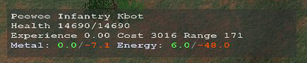

Balanced Annihilation:Using Selections

|
Warning! This page is outdated! The information displayed may no longer be valid, or has not been updated in a long time. Please refer to a different page for current information. |
<--Back to Balanced Annihilation
Default Selection Controls
Many of these controls can be customized in the selection editor.
Selecting/Deselecting Units
Unless you have issued a pending command(see Left Mouse Control (Mouse 1)), left-clicking(Mouse Button 1) a unit will clear the current selection and select the left-clicked unit, if a spot with no valid selection is clicked(empty space, ground, unowned units), the current selection will be cleared. Left-clicking and dragging will draw a box, any units within this box will be selected when you release the mouse button.
Shift Left-clicking(including dragging a select box), unless you have a pending command, will add units to the current selection.
CTRL Left-clicking (including dragging a select box), unless you have a pending command, will toggle selection. Units in the selection will be removed from it, units not in the selection will be added to it.
Double-left-clicking a unit that's not in a group will select all visible (camera bounds) units of the clicked type. Shift Double-left-clicking will add all units of the double-clicked unit's type to the current selection.
CTRL Z is a shortcut to select all owned units of the current selected type. For example, if a peewee and a brawler are selected, all peewees and brawlers will be selected.
CTRL A is a shortcut (which can be eddited in Selection Editor) to select all owned units.
| "Tooltips" are displayed in the bottom left of the current interface. If units are selected, this information is the sum of all information about all units in the selection. If you select a bank of 5 solar collectors, it will show the total health of all those units and the total energy they're producing. If you move the mouse over a "build-pic" in a list of units that can be built, it will show you the costs and stats associated with the unit represented by the "build-pic". If you have no selection, the tooltip will show information about what your mouse is over at that time. If your mouse is over a unit, it will show stats for that unit. Otherwise it will show information about the terrain. |
|
{kind=link}
{kind=link}
{kind=link}
{kind=link}
{kind=link}

Basic Unit Groups
Spring supports assigning units to numbered groups. You can assign the currently selected units to a numbered group with CTRL # (where # is a number key) which will put that number(#) above all selected units, then later, you can quickly select just these units by pressing that #, or add them to the current selection with SHIFT #.
If a factory is set to a group, all units built by this factory will also be automatically assigned to this group. This is not a good idea with combat units unless you ungroup the factory before sending the units into battle, as it can prevent you from assigning certain orders, and result in newly-produced units doing stupid things.
Units can only be in one group at a time, so assigning a new group number to a unit will remove it from its current group.
Assigning a unit to a group overides normal double-clicking behaviour. If you double-click a member of a group, all units in the same group will be selected.
Also note that when you CTRL # a group of units the old group with that number will no longer exist. If you intend to add aditional units to a group, you must first SHIFT # the current members and then add (by holding SHIFT) the additional units to the selection group and the use CTRL # to re-assign all the units to that group. A shortcut for this is holding down both SHIFT and CTRL and pressing a number(#) to add the current selection to that group, and select the entirety of that new group.
The Selection Editor
SelectionEditor.exe is a program installed in your install directory, which is used for editing your selectkeys.txt configuration file, allowing you to make your own shortcut keys for selecting/filtering selection. Alternately, you can write selectkeys.txt yourself.
This Forum Thread has some good documentation about using the selection editor.